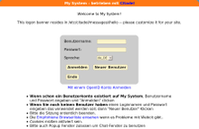
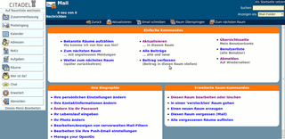

Citadel
Dieser Artikel wurde für die folgenden Ubuntu-Versionen getestet:
Ubuntu 14.04 Trusty Tahr
Artikel für fortgeschrittene Anwender
Dieser Artikel erfordert mehr Erfahrung im Umgang mit Linux und ist daher nur für fortgeschrittene Benutzer gedacht.
Zum Verständnis dieses Artikels sind folgende Seiten hilfreich:
 Citadel
Citadel  ist eine freie Groupware-Lösung. Mit Citadel ist es möglich, Kalenderdaten, Adressen, Notizen und E-Mails auf einem Server über eine moderne, mehrsprachige Web-Oberfläche mit einem Browser zu verwalten. Darüber hinaus sind praktische Extras wie ein Chat oder die Unterstützung von OpenID (ab Version 7.37) integriert. Besonders nützlich ist die E-Mail-Funktion. Mit ihr kann man innerhalb weniger Minuten einen eigenen E-Mail-Server aufsetzen, der auch E-Mails von anderen Dienstleistern abrufen bzw. einsammeln kann.
ist eine freie Groupware-Lösung. Mit Citadel ist es möglich, Kalenderdaten, Adressen, Notizen und E-Mails auf einem Server über eine moderne, mehrsprachige Web-Oberfläche mit einem Browser zu verwalten. Darüber hinaus sind praktische Extras wie ein Chat oder die Unterstützung von OpenID (ab Version 7.37) integriert. Besonders nützlich ist die E-Mail-Funktion. Mit ihr kann man innerhalb weniger Minuten einen eigenen E-Mail-Server aufsetzen, der auch E-Mails von anderen Dienstleistern abrufen bzw. einsammeln kann.
Das Programm hat seine Wurzel in "Bulletin-Board-Systemen" (BBS) der 90er Jahre, den Vorläufern heutiger Webforen. Das Programm unterteilt einzelne Bereiche in sogenannte "Räume" (ursprünglich "Chat Rooms"). Nicht jeder Raum muss öffentlich sein, so ist z.B. der eigene Posteingang logischerweise ein privater Raum. Diese Aufteilung spiegelt sich in der Verwaltung des Systems wieder und ist - nach einer kurzen Eingewöhnungsphase - relativ einfach und intuitiv.
Der vielleicht entscheidende Vorteil gegenüber anderen Groupware-Lösungen: da bereits alle benötigten Komponenten enthalten sind, kann auf die Installation separater Serverdienste wie Apache, Postfix oder MySQL verzichtet werden (was die Nutzung dieser Dienste aber nicht grundsätzlich ausschließt). Eine Alternative ist z.B. Zimbra , das im Gegensatz zu Citadel aber einiges mehr an Ressourcen benötigt.
Hinweis:
Die Weboberfläche war sehr "wählerisch", was den eingesetzten Browser angeht. Der Internet Explorer von Windows wurde beispielsweise nicht unterstützt. Empfehlenswerte und getestete Programme sind im Abschnitt Browser aufgeführt.
Installation¶
 Citadel ist in den offiziellen Paketquellen enthalten. Für ein Testsystem kann folgendes Metapaket installiert [1] werden:
Citadel ist in den offiziellen Paketquellen enthalten. Für ein Testsystem kann folgendes Metapaket installiert [1] werden:
citadel-suite (universe)
 mit apturl
mit apturl
Paketliste zum Kopieren:
sudo apt-get install citadel-suite
sudo aptitude install citadel-suite
Wer dagegen einen Server einrichten will, braucht nur die Pakete:
citadel-server (universe)
citadel-mta (universe, Mail Transport Agent)
citadel-webcit (universe, Weboberfläche)
mit apturl
Paketliste zum Kopieren:
sudo apt-get install citadel-server citadel-mta citadel-webcit
sudo aptitude install citadel-server citadel-mta citadel-webcit
Während der Installation werden einige Dinge abgefragt. Die folgende Tabelle bietet eine Überblick.
Achtung!
Die hier beschriebenen Voreinstellungen beziehen sich auf eine Installation auf einem System ohne Apache, PHP, MySQL oder einer anderen Groupware-Installation. Ansonsten sollten die Standardports für http:// und https:// in Citadel geändert werden, damit sie nicht mit bereits benutzten Ports kollidieren (beispielsweise auf 8000 und 44300).
| Fragen und Antworten bei der Installation | ||
| Frage | Erläuterung | |
| 1. | IP-Adresse | Unter welcher IP-Adresse soll der Server erreichbar sein? Frei wählbar, Vorgabe: 0.0.0.0 (beim Erstkontakt mit Citadel empfohlen) |
| 2. | externer Authentifizierungsmodus | Zur Auswahl stehen intern (eigene Benutzerverwaltung) oder extern (via /etc/passwd oder LDAP). Vorgabe: nein (=intern) |
| 3. | Benutzername des Citadel-Administrators | Nur bei interner Benutzerverwaltung frei wählbar. Vorgabe: admin. |
| 4. | Administrator-Passwort | frei wählbar |
| 5. | Integration mit Apache-Webservern | Welcher Webserver soll genutzt werden? Zur Auswahl stehen Apache und intern. |
| 6. | HTTP-Port von WebCit | Frei wählbar, Vorgabe: 80 (IANA-Standardport: 504) |
| 7. | HTTPS-Port von WebCit | Frei wählbar, Vorgabe: 443 |
| 8. | Sprache des WebCit-Servers | Sprachauswahl bei der Anmeldung einschränken. Zur Verfügung stehen neben Deutsch und Englisch weitere Sprachen. Benutzerdefiniert überlässt dem Benutzer bei der Anmeldung die Wahl. |
Falls man aus Versehen eine falsche Antwort gegeben hat, kann man die Fragen 1-4 mit
sudo dpkg-reconfigure citadel-server
und die Fragen 5-8 mit
sudo dpkg-reconfigure citadel-webcit
erneut aufrufen. Zusätzlich werden ein Benutzer und eine Gruppe citadel auf dem System angelegt.
Hinweis:
Unter Ubuntu 12.04 wurden Probleme mit der Installation aus den offiziellen Paketquellen bei 32-bit-Systemen berichtet. Dann kann man auf eine manuelle Installation ausweichen.
Manuell¶
Alternativ kann eine manuelle Installation durchgeführt werden. Besonders bequem gelingt dies mit Easy Install . Hiermit wird Citadel mitsamt Webcit installiert.
Für die manuelle Installation mit EasyInstall wird zlib benötigt. Dies kann man, wenn nicht installiert, über das folgende Paket installieren:
zlib1g-dev
mit apturl
Paketliste zum Kopieren:
sudo apt-get install zlib1g-dev
sudo aptitude install zlib1g-dev
Konfiguration¶
 Wenn bei der Installation (siehe oben) nichts anderes ausgewählt wurde, erreicht man die Weboberfläche "WebCit" über einen Browser folgendermaßen:
http://<Server-IP_oder_Domain>
oder verschlüsselt (ein "self-signed"-Zertifikat wird während der Installation erstellt):
https://<Server-IP_oder_Domain>
Bei einer lokalen Testinstallation bzw. direkt auf dem Server funktionieren auch:
http://localhost und https://localhost
Ansonsten noch die verwendete Portnummer (:Port) an die Adresse anhängen. Es erscheint eine Anmeldung, bei der man während der Installation angegebenen Administrator-Benutzernamen verwendet. Empfehlenswert ist nun - neben den nachfolgend beschriebenen Schritten - die Lektüre von http://www.citadel.org/doku.php?id=documentation:system_administration_manual&s[=get&s[]=start#installation Getting Started] und der FAQ .
Passwort¶
Falls nicht bereits während der Installation geschehen, wird als erster wichtiger Schritt ein Administrator-Kennwort vergeben:
"Erweitert -> Ändern Sie Ihr Passwort"
Serverdienst steuern¶
Nach einer Neukonfiguration sollte der Server neu gestartet werden. Obwohl diese Funktion auch über die interne Verwaltungsoberfläche verfügbar ist, werden Serverdienste traditionell über die Kommandozeile bedient. Die möglichen Optionen liefert der Befehl:
sudo /etc/init.d/citadel
Benutzer-Anmeldung¶
Als nächstes sollte man die Funktion, dass Benutzer sich selbst (auf dem Anmeldeportal) registrieren können, deaktivieren. Nur wenn man wirklich möchte, dass sich Benutzer frei anmelden können, kann die Funktion aktiviert bleiben - dieses sollte mit Vorsicht genossen werden. Zum Deaktivieren geht man unter:
"Verwaltung -> Systemvorgaben bearbeiten -> Zugang"
Hier wird ein Haken bei "Erzeugen von Accounts am Anmeldeportal verbieten" gesetzt.
Benutzer-Verwaltung¶
Falls man die interne Benutzerverwaltung verwendet, können die notwendigen Funktionen über
"Verwaltung -> Benutzer bearbeiten/löschen/anlegen"
gefunden werden.

Banner einrichten¶
Auf dem Anmeldebildschirm können eigene Informationen oder Hinweise untergebracht werden. Die entsprechende Dateien befinden sich im Ordner /etc/citadel/messages/ und können nur mit Root-Rechten eingesehen und geändert werden.
Design ändern¶
Um das Design der Weboberfläche zu ändern, editiert [3] man die Datei /usr/share/citadel-webcit/static.local/webcit.css mit Root-Rechten. HTML- bzw. CSS-Kenntnisse werden vorausgesetzt (siehe auch Customizing WebCit ). Anschließend muss man den WebCit-Server neu starten.
Benutzung¶
Prinzipiell findet die Kommunikation mit dem Citadel-Server über die Weboberfläche "WebCit" statt. Unabhängig davon lassen sich E-Mails mit jedem beliebigen E-Mail-Client abrufen. Für Kommandozeilen-Nutzer steht mit dem Paket citadel-client ein eigener Textmodus zur Verfügung.
Browser¶
Die Weboberfläche verwendet für optimalen Benutzerkomfort neben DOM, JavaScript und CSS intensiv AJAX. Während der Entwicklung getestete und empfohlene Browser:
Firefox 3.0+
Opera 9.5+
Chromium bzw. Google Chrome (oder andere moderne, auf Webkit basierende Browser)
Safari 3.0+
Anmerkung: das + hinter der Version steht für "oder neuer". Ältere Versionen können Probleme bereiten.
externe E-Mail-Programme¶
Hinweis:
Das Versenden von E-Mails ins Internet erfordert unter Umständen einen registrierten Domainnamen (FQDN), da ansonsten heutzutage viele Provider-Mailserver von einem Spamversuch ausgehen und den Weitertransport blockieren.
Statt der Weboberfläche können auch externe E-Mail-Programme zur Kommunikation mit dem Citadel-Server eingesetzt werden. Als Posteingangs- und Postausgangsserver wird der Citadel-Server angegeben, als Typ "IMAP". Benutzername und Passwort entsprechen den in Citadel hinterlegten Daten. Auch eine verschlüsselte Verbindung über SSL ist möglich.
Weitere Details sind in der Dokumentation unter Getting Favorite Clients Working nachzulesen.
E-Mail-Sammeldienst¶
Das Abrufen von E-Mail-Konten bei anderen Dienstleistern ("Providern") erfolgt über POP3. Zur Konfiguration wählt man im Hauptmenü links zuerst "Posteingang", dann direkt "Erweitert" aus. Unterhalb von "Erweiterte Raum-Kommandos" jetzt "Diesen Raum bearbeiten oder löschen" und dann die entsprechenden Daten bei "Sammeldienste" eintragen.
Problemlösungen¶
Weboberfläche auf Englisch¶
Sollte WebCit auf englisch sein, fehlen vermutlich die deutschen Sprachpakete auf dem eigenen Rechner:
language-pack-de
language-pack-de-base
mit apturl
Paketliste zum Kopieren:
sudo apt-get install language-pack-de language-pack-de-base
sudo aptitude install language-pack-de language-pack-de-base
Wem das immer noch nicht hilft, findet in der FAQ weitere Lösungsansätze.
Links¶
Citadel - Wikipedia
Dokumentation
und FAQ Support
- MailinglistenThemes
- bisher nur eins
Serverdienste
 Übersichtsseite
Übersichtsseite
- Erstellt mit Inyoka
-
 2004 – 2017 ubuntuusers.de • Einige Rechte vorbehalten
2004 – 2017 ubuntuusers.de • Einige Rechte vorbehalten
Lizenz • Kontakt • Datenschutz • Impressum • Serverstatus -
Serverhousing gespendet von